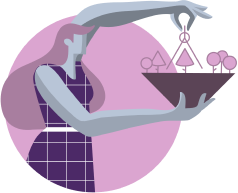

Possible Conflicts and Differences of Opinion:
The main conflict between Sixes and Nines is that they never say what is actually on their minds or what they really want for themselves. As a consequence, they are usually stubborn, quiet and tend to make others guess what is going on.
Enneagrams Sixes and Nines will try to hold back conflicts and confrontations until they’re pushed to the limit, although Sixes have a shorter fuse when it comes to their emotions. When this happens, the relationship can end in an impasse: they will draw away from each other, but not all the way.
Apart from that, they both like familiar things and struggle facing constant changes, which they truly dislike. They tend to feel that familiarity offers them stability and security, which is reinforced by the conviction that they must remain quiet and not make noise. Another potential problem for them has to do with their priorities. Both these Enneagram types like fulfilling their social roles but they tend to withdraw completely whenever they need to.
On one hand, Sixes prioritize doing whatever they have to do to keep their lives in place. If they don’t, they may have a guilt trip. On the other, Nines also fulfill their social roles, but they usually adjust to others even if their own stress and instability grows. Their different priorities can eventually lead to confrontations and an unavoidable break up.
The main conflict between Sixes and Nines is that they never say what is actually on their minds or what they really want for themselves. As a consequence, they are usually stubborn, quiet and tend to make others guess what is going on.
Enneagrams Sixes and Nines will try to hold back conflicts and confrontations until they’re pushed to the limit, although Sixes have a shorter fuse when it comes to their emotions. When this happens, the relationship can end in an impasse: they will draw away from each other, but not all the way.
Apart from that, they both like familiar things and struggle facing constant changes, which they truly dislike. They tend to feel that familiarity offers them stability and security, which is reinforced by the conviction that they must remain quiet and not make noise. Another potential problem for them has to do with their priorities. Both these Enneagram types like fulfilling their social roles but they tend to withdraw completely whenever they need to.
On one hand, Sixes prioritize doing whatever they have to do to keep their lives in place. If they don’t, they may have a guilt trip. On the other, Nines also fulfill their social roles, but they usually adjust to others even if their own stress and instability grows. Their different priorities can eventually lead to confrontations and an unavoidable break up.
33
Enneagram 1 in Relationships